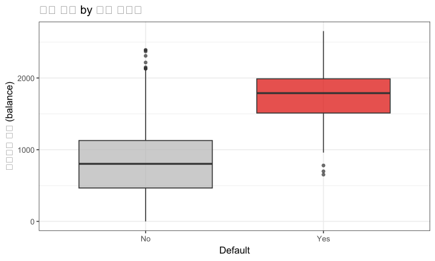
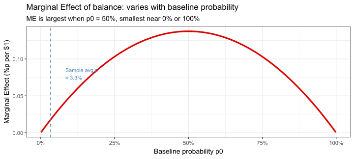
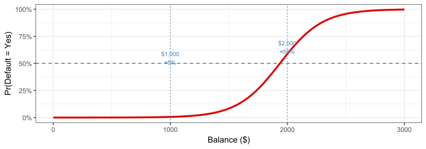
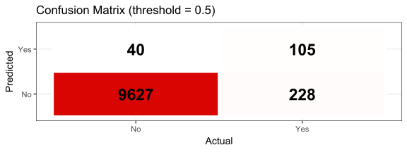
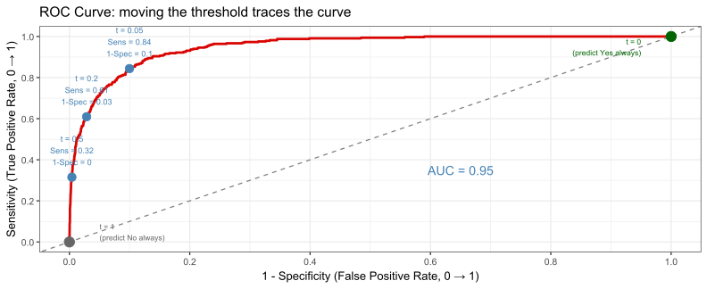
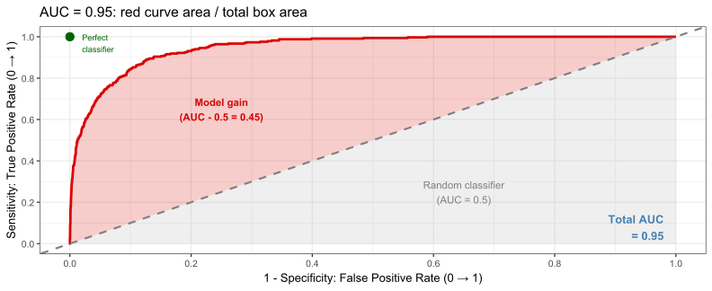

## default n
## 1 No 9667
## 2 Yes 333Logistic Regression
FMB819: R을 이용한 데이터분석
고려대학교 경영대학 정지웅
Today’s Agenda
로지스틱 회귀(Logistic Regression) 의 필요성과 직관적 이해
오즈(Odds), 오즈비(OR), 한계 효과(Marginal Effect): 계수 해석 방법
실증 분석: 신용카드 채무 불이행(Default) 예측
예측 확률 계산 및 모형 적합도 평가
왜 로지스틱 회귀인가?
지금까지는 연속형 종속변수 \(y\)를 다루었음: 수익률, 매출, 가격 등
현실에서는 Yes/No 이진 결과에 관심을 갖는 경우가 많음:
- 대출 채무 불이행 여부 (default vs. non-default)
- 고객 이탈 여부 (이탈 vs. 유지)
- M&A 성사 여부 (성공 vs. 실패)
\(y_i \in \{0, 1\}\) 인 경우, OLS를 그대로 쓰면 문제가 생김 → 왜?
분석 예제: 신용카드 채무 불이행
ISLR2패키지의Default데이터셋: 10,000명의 신용카드 고객변수 설명 default채무 불이행 여부 ( Yes/No)student학생 여부 ( Yes/No)balance평균 신용카드 잔액 (달러) income연간 소득 (달러) 핵심 질문: 신용카드 잔액(
balance)으로 채무 불이행을 예측할 수 있는가?
- 채무 불이행자(
Yes)는 전체의 약 3.3% — 대부분은 정상 고객
채무 불이행자의 분포


- 채무 불이행자는 잔액이 높은 경향이 있음 →
balance가 유용한 예측변수일 것
OLS를 그대로 쓰면? (선형 확률 모형)

- OLS 문제: 잔액이 매우 낮으면 확률이 음수로 예측됨
- 해결책: 어떤 \(x\) 값에서도 항상 \((0,1)\) 사이 값을 출력하는 함수 필요
로지스틱 함수: S자 곡선
임의의 실수 \(z\)를 항상 \((0, 1)\) 사이로 압축하는 함수:
\[\sigma(z) = \frac{e^z}{1 + e^z}\]

직관: 선형 예측자 \(z = b_0 + b_1 x\)가 아무리 크거나 작아도,
로지스틱 함수를 거치면 반드시 0과 1 사이로 나옴
로지스틱 회귀 모형
선형 예측자 \(z_i = b_0 + b_1 x_i\)를 로지스틱 함수에 통과:
\[\Pr(\text{default}_i = 1 \mid \text{balance}_i) = \frac{e^{b_0 + b_1 \cdot \text{balance}_i}}{1 + e^{b_0 + b_1 \cdot \text{balance}_i}}\]

- 잔액이 낮으면 불이행 확률 ≈ 0%, 높으면 ≈ 100%
- 중간 구간에서 확률이 S자 형태로 가파르게 증가
오즈(Odds)
오즈(Odds): 사건이 일어날 확률 vs. 일어나지 않을 확률의 비율
\[\text{Odds} = \frac{p}{1-p}\]
| 확률 \(p\) | 오즈 | 직관적 표현 |
|---|---|---|
| 0.10 | 0.11 | 9번 중 1번 성공 |
| 0.50 | 1.00 | 반반 |
| 0.75 | 3.00 | 3:1 (이길 가능성이 질 가능성의 3배) |
| 0.90 | 9.00 | 9:1 |
역변환: 오즈 → 확률: \(\quad p = \dfrac{\text{Odds}}{1 + \text{Odds}}\)
예: 오즈 = 3 → \(p = \frac{3}{4} = 0.75\)
왜 오즈를 쓰는가? 확률은 0~1로 제한되지만,
오즈는 0~∞ → 로그 오즈는 -∞~+∞ → 선형 모형에 적합
로그 오즈와 로지스틱 회귀의 연결
\[\underbrace{p}_{\text{확률 }(0,1)} \xrightarrow{\div(1-p)} \underbrace{\frac{p}{1-p}}_{\text{오즈 }(0,\infty)} \xrightarrow{\log} \underbrace{\log\frac{p}{1-p}}_{\text{로그오즈 }(-\infty,+\infty)}\]
로지스틱 회귀는 로그 오즈를 선형 함수로 모형화:
\[\log\left(\frac{p_i}{1-p_i}\right) = b_0 + b_1 x_i\]
양변을 \(p_i\)에 대해 풀면 → 로지스틱 함수가 자연스럽게 등장:
\[p_i = \frac{e^{b_0 + b_1 x_i}}{1 + e^{b_0 + b_1 x_i}}\]
즉, 로지스틱 회귀 = “로그 오즈를 \(x\)로 예측하는 선형 모형”
R에서 로지스틱 회귀: glm()
family = binomial: 종속변수가 이진형임을 지정 → 자동으로 logit 링크 사용
## # A tibble: 2 × 5
## term estimate std.error statistic p.value
## <chr> <dbl> <dbl> <dbl> <dbl>
## 1 (Intercept) -10.7 0.361 -29.5 3.62e-191
## 2 balance 0.00550 0.000220 25.0 1.98e-137계수 읽기:
(Intercept)= \(b_0 = -10.65\): balance = 0일 때 로그오즈balance= \(b_1 = 0.0055\): balance가 $1 증가할 때 로그오즈 변화
계수 해석 방법 1: 로그오즈
\(b_1 = 0.0055\): balance가 $1 증가할 때, 채무불이행 로그오즈가 0.0055 증가
- \(b_1 > 0\) → balance ↑ 이면 불이행 확률 ↑ (방향 파악)
- 로그오즈는 직관적이지 않음 → 오즈비로 변환하면 더 이해하기 쉬움
계수 해석 방법 2: 오즈비 (OR)
오즈비(OR): \(x\)가 1단위 증가할 때 오즈의 배율 변화
\[\text{OR} = e^{b_1}\]
왜 \(e^{b_1}\)인가?
\[\log\text{Odds}(x+1) - \log\text{Odds}(x) = b_1 \quad\Rightarrow\quad \frac{\text{Odds}(x+1)}{\text{Odds}(x)} = e^{b_1}\]
## (Intercept) balance
## 2.366933e-05 1.005514e+00## 2.5 % 97.5 %
## (Intercept) 1.138415e-05 4.694353e-05
## balance 1.005092e+00 1.005961e+00해석: \(\text{OR} = e^{0.0055} \approx 1.0055\)
→ balance $1 증가 시 채무불이행 오즈가 0.55% 증가
→ balance $1,000 증가 시: \(e^{0.0055 \times 1000} \approx 241\) → 오즈가 241배 증가
⚠️ OR은 오즈의 배율이지, 확률의 변화가 아님
계수 해석 방법 3: 한계 효과 (Marginal Effect)
한계 효과(Marginal Effect): \(x\)가 1단위 증가할 때 확률의 변화량 (\(\Delta p\))
\[\frac{\partial p}{\partial x} = b_1 \cdot p(1-p)\]
- OLS의 계수 해석과 가장 유사
- \(p(1-p)\)가 곱해지므로 → 기준 확률(\(p_0\))에 따라 값이 달라짐
두 가지 방법:
| 방법 | 설명 | 언제 사용 |
|---|---|---|
| AME (Average Marginal Effect) | 모든 관측치에서 ME 계산 후 평균 | 전체 평균 효과를 보고 싶을 때 |
| MEM (Marginal Effect at Mean) | 평균값(\(\bar{x}\))에서 ME 계산 | 대표적인 고객에서의 효과 |
한계 효과: R로 계산하기
방법 1: margins 패키지 (AME)
## factor AME SE z p lower upper
## balance 0.0001 0.0000 25.2973 0.0000 0.0001 0.0001→ balance $1 증가 시 채무불이행 확률이 평균적으로 약 0.012%p 증가
한계 효과: R로 계산하기 (계속)
방법 2: 직접 계산 (수식 이용)
\[\text{ME} = b_1 \times \hat{p} \times (1 - \hat{p})\]
## MEM: 0.0013 %p per $1 increase in balance## AME: 0.0119 %p per $1 increase in balance한계 효과: 기준 확률에 따라 달라진다

- ME는 \(p_0 = 0.5\)에서 최대, 양 극단에서 0에 수렴
- 표본 평균 불이행률(≈3.3%)에서 ME가 매우 작음 → AME가 작게 나오는 이유
세 가지 해석 방법 비교
| 방법 | 계산 | 해석 | 특징 |
|---|---|---|---|
| 로그오즈 | \(b_1\) | balance $1 증가 → 로그오즈 0.0055 증가 | 직관적이지 않음 |
| 오즈비(OR) | \(e^{b_1}\) | balance $1 증가 → 오즈 1.0055배 | 배율로 표현, 기준 확률 불필요 |
| 한계 효과(ME) | \(b_1 \cdot p(1-p)\) | balance $1 증가 → 확률 0.012%p 증가 | OLS와 유사, 기준 확률 필요 |
추정 결과 해석: 3단계 적용
| term | estimate | std.error | statistic | p.value |
|---|---|---|---|---|
| (Intercept) | -10.65133 | 0.36116 | -29.49221 | 0 |
| balance | 0.00550 | 0.00022 | 24.95309 | 0 |
balance 계수 (\(\hat{b}_1 \approx 0.00550\)) 3단계 해석:
Step 1 — 방향: \(b_1 > 0\) → balance 증가 → 채무불이행 확률 증가
Step 2 — 오즈비: \(\text{OR} = e^{0.00550} \approx 1.0055\) → $1 증가마다 오즈 0.55% 증가
Step 3 — 한계 효과 (AME): margins(logit_fit) → balance $1 증가 시 확률 약 0.012%p 증가
($1,000 증가 시 → 약 +12%p, 단 기준 확률에 따라 달라짐)
예측 확률 계산
predict(..., type = "response"): 확률 스케일로 예측
## 1 2
## 0.005752145 0.585769370- 잔액이 두 배라고 확률이 두 배가 되지 않음 → 비선형

Task 1
아래 코드를 순서대로 실행하며 결과를 확인해보자.
Step 1. OLS와 로지스틱 회귀를 각각 추정:
Step 2. balance = $500과 $2,500에서 두 모형의 예측값을 비교:
→ OLS 예측값이 이상한 이유는? 어떤 값이 나오는가?
Step 3. student 변수만으로 로지스틱 회귀 추정 후 오즈비 계산:
→ 학생이면 채무불이행 오즈가 몇 배 높은가? 계수의 부호는 무엇을 의미하는가?
다중 로지스틱 회귀
여러 독립변수를 동시에 포함:
\[\log\left(\frac{p_i}{1-p_i}\right) = b_0 + b_1 \cdot \text{balance}_i + b_2 \cdot \text{income}_i + b_3 \cdot \text{student}_i\]
## # A tibble: 4 × 4
## term estimate OR p.value
## <chr> <dbl> <dbl> <dbl>
## 1 (Intercept) -10.9 0.0000190 4.91e-108
## 2 balance 0.00574 1.01 4.22e-135
## 3 income 0.00000303 1.00 7.12e- 1
## 4 studentYes -0.647 0.524 6.19e- 3- 각 계수: 다른 변수들을 통제한 후 해당 변수의 로그오즈 변화
다중 회귀: 교란변수(OVB) 사례
단변수 회귀 (student만)
| term | estimate | p.value |
|---|---|---|
| (Intercept) | -3.5041 | 0e+00 |
| studentYes | 0.4049 | 4e-04 |
\(b_\text{student} > 0\) → 학생 = 불이행 확률 높음 ❓
다중 회귀 (balance, income, student)
| term | estimate | p.value |
|---|---|---|
| (Intercept) | -10.8690 | 0.0000 |
| balance | 0.0057 | 0.0000 |
| income | 0.0000 | 0.7115 |
| studentYes | -0.6468 | 0.0062 |
\(b_\text{student} < 0\) → 학생 = 불이행 확률 낮음 ✅
왜 방향이 바뀌었는가?
학생은 잔액(balance)이 높은 경향 → 단변수 회귀에서 balance 효과가 student에 섞임
→ balance를 통제하면 진짜 student 효과가 드러남
모형 적합도 ①: 혼동 행렬
## Actual
## Predicted No Yes
## No 9627 228
## Yes 40 105
| 지표 | 계산 | 의미 |
|---|---|---|
| 정확도(Accuracy) | (TP+TN) / 전체 | 전체 중 올바르게 분류된 비율 |
| 민감도(Sensitivity) | TP / 실제 Yes | 실제 불이행자 중 잡아낸 비율 |
| 특이도(Specificity) | TN / 실제 No | 정상 고객을 정상으로 분류한 비율 |
모형 적합도 ②: Pseudo \(R^2\)
우도(Likelihood): “이 모형이 맞다면, 관측된 데이터가 나올 확률”
- 10명 중 3명이 불이행 → 그 3명에게 높은 확률, 7명에게 낮은 확률 예측할수록 우도 ↑
- 로그 우도(log-likelihood)는 항상 음수, 0에 가까울수록 좋음
McFadden’s Pseudo \(R^2\):
\[R^2_{\text{McFadden}} = 1 - \frac{\log L(\hat{M})}{\log L(M_0)}\]
| 상황 | \(\log L(M_0)\) | \(\log L(\hat{M})\) | 비율 | \(R^2\) |
|---|---|---|---|---|
| 개선 없음 | -100 | -100 | 1.00 | 0 |
| 절반 개선 | -100 | -50 | 0.50 | 0.5 |
| 완벽한 모형 | -100 | ≈ 0 | ≈ 0 | ≈ 1 |
## 'log Lik.' 0.4619194 (df=4)통상 0.2 ~ 0.4이면 양호
Task 2
logit_multi (balance + income + student 모형)를 사용하자.
Step 1. 오즈비와 95% CI 계산:
→ balance OR을 해석하시오. OR = 1보다 크면 어떤 의미인가?
Step 2. 다음 두 고객의 채무불이행 확률을 예측:
→ 학생과 비학생의 확률 차이는? 그 차이의 방향이 Task 1의 단변수 결과와 다른 이유는?
Step 3. AME 계산:
→ balance의 AME를 해석하시오. OR 해석과 어떻게 다른가?
임계값(Threshold)의 선택
로지스틱 회귀는 확률을 예측함. Yes/No로 분류하려면 기준선(threshold)이 필요.
threshold를 바꾸면:
| threshold | 결과 | Trade-off |
|---|---|---|
| 낮게 (예: 0.1) | 조금만 의심스러워도 Yes | 불이행자를 많이 잡지만, 정상 고객도 많이 오분류 |
| 높게 (예: 0.9) | 거의 확실할 때만 Yes | 정상 고객 보호, 하지만 실제 불이행자를 많이 놓침 |
→ 민감도 ↑ 이면 특이도 ↓ (항상 trade-off)
실무 판단: 어떤 오류가 더 비용이 큰가?
- 불이행자를 놓치는 것 (False Negative) vs. 정상 고객을 의심하는 것 (False Positive)
- 신용카드사 → False Negative 비용이 큼 → threshold를 낮게 설정
ROC 곡선
Threshold 하나를 고르면 민감도와 특이도가 하나씩 결정됨.
ROC 곡선은 모든 threshold에서의 (민감도, 특이도) 쌍을 한 번에 시각화한 것.
이상적인 분류기의 두 가지 목표:
| 목표 | 의미 | 그래프 방향 |
|---|---|---|
| 민감도 = 1 | 실제 불이행자를 하나도 놓치지 않음 | y축 = 1 (위) |
| 1-특이도 = 0 | 정상 고객을 하나도 오분류하지 않음 | x축 = 0 (왼쪽) |
→ 두 목표를 동시에 달성하는 점 = (0, 1) 왼쪽 위 꼭짓점
→ 곡선이 왼쪽 위에 가까울수록 모든 threshold에서 성능이 좋은 모형
세 가지 극단적 상황:
| 상황 | ROC 위치 | AUC |
|---|---|---|
| 완벽한 모형 | 왼쪽 위 꼭짓점 (0, 1)을 지남 | 1.0 |
| 동전 던지기 | 대각선 (점선) 위에 위치 | 0.5 |
| 최악의 모형 | 오른쪽 아래 (대각선 아래) | < 0.5 |
ROC 곡선: threshold 이동의 효과
threshold를 낮추면 (예: 0.9 → 0.1):
- 더 많은 고객을 Yes로 분류 → 민감도 ↑ (default를 더 많이 잡음)
- 동시에 정상 고객도 더 많이 오분류 → 1-특이도 ↑ (x축 오른쪽으로 이동)

- t = 1 (왼쪽 아래): 모두 No → 불이행자를 하나도 못 잡음 (Sens = 0)
- t = 0 (오른쪽 위): 모두 Yes → 불이행자를 다 잡지만 정상 고객도 다 오분류 (1-Spec = 1)
- threshold를 낮출수록 점이 오른쪽 위 방향으로 이동
AUC: 직관적 이해
AUC가 의미하는 것: 모형이 두 사람을 올바르게 순위 매기는 능력
불이행자 1명과 정상 고객 1명을 무작위로 뽑았을 때,
모형이 불이행자에게 더 높은 확률을 부여할 확률
예시:
| 상황 | 불이행자 예측 확률 | 정상 고객 예측 확률 | 올바른 순위? |
|---|---|---|---|
| ✅ 좋은 예측 | 0.82 | 0.05 | Yes |
| ✅ 좋은 예측 | 0.45 | 0.12 | Yes |
| ❌ 나쁜 예측 | 0.18 | 0.67 | No |
이런 쌍을 여러번 반복해서 올바른 순위를 매긴 비율 = AUC
| AUC | 해석 | 비유 |
|---|---|---|
| 1.0 | 항상 올바르게 순위 매김 | 완벽한 신용 심사관 |
| 0.95 | 95%의 쌍에서 올바르게 순위 매김 | 매우 우수 |
| 0.70 | 70%의 쌍에서 올바르게 순위 매김 | 양호 |
| 0.50 | 50% — 동전 던지기와 동일 | 쓸모없는 모형 |
AUC: 예시
설정: 모형이 각 고객에게 채무불이행 예측 확률을 부여함
| Customer | Predicted Prob | Actual Default |
|---|---|---|
| A (Defaulter) | 0.82 | Yes |
| B (Defaulter) | 0.45 | Yes |
| C (Normal) | 0.12 | No |
| D (Normal) | 0.05 | No |
AUC 계산: 불이행자(A, B) vs. 정상 고객(C, D) 가능한 쌍 4개를 비교
| 비교 쌍 | 불이행자 확률 | 정상 고객 확률 | 올바른 순위? |
|---|---|---|---|
| A vs. C | 0.82 | 0.12 | ✅ Yes |
| A vs. D | 0.82 | 0.05 | ✅ Yes |
| B vs. C | 0.45 | 0.12 | ✅ Yes |
| B vs. D | 0.45 | 0.05 | ✅ Yes |
AUC = 4/4 = 1.0 → 이 예시에서 완벽한 순위 부여
AUC = 0.95 → 임의의 (불이행자, 정상 고객) 쌍 100개 중
95개에서 불이행자에게 더 높은 확률을 부여함
AUC: ROC 곡선의 넓이

- 빨간 음영 (곡선 위, 대각선 위): 무작위 분류 대비 모형의 추가 성능
- 회색 음영 (대각선 아래): 동전 던지기도 얻을 수 있는 영역 (AUC = 0.5)
전체 AUC = 빨간 + 회색 음영 합계
Task 3
모형을 훈련/테스트 세트로 나눠 실제 예측 성능을 평가해보자.
Step 1. 7:3으로 분리 후 훈련 세트로 모형 추정:
Step 2. 테스트 세트에서 혼동 행렬 계산:
→ 테스트 세트의 정확도(Accuracy)를 계산하시오. 훈련 세트와 크게 다른가?
Step 3 (Optional). ROC와 AUC 계산:
→ AUC가 0.5에 가까우면 어떤 의미인가?
OLS vs. 로지스틱 회귀: 정리
| 구분 | OLS | 로지스틱 회귀 |
|---|---|---|
| 종속변수 | 연속형 | 이진형 (0/1) |
| 추정 방법 | 최소제곱법 | 최대우도법 (MLE) |
| 예측값 범위 | \((-\infty, +\infty)\) | \((0, 1)\) |
| 계수 직접 해석 | \(y\)의 변화량 | 로그오즈의 변화량 |
| 확률 변화 해석 | 계수 그대로 | 한계 효과(ME) 별도 계산 필요 |
| 적합도 지표 | \(R^2\) | Pseudo \(R^2\), AUC |
| R 함수 | lm() |
glm(..., family = binomial) |
핵심 메시지: 로지스틱 회귀 계수는 로그오즈의 변화를 의미함.
확률 변화를 알고 싶으면 → 한계 효과(AME) 를 계산할 것.